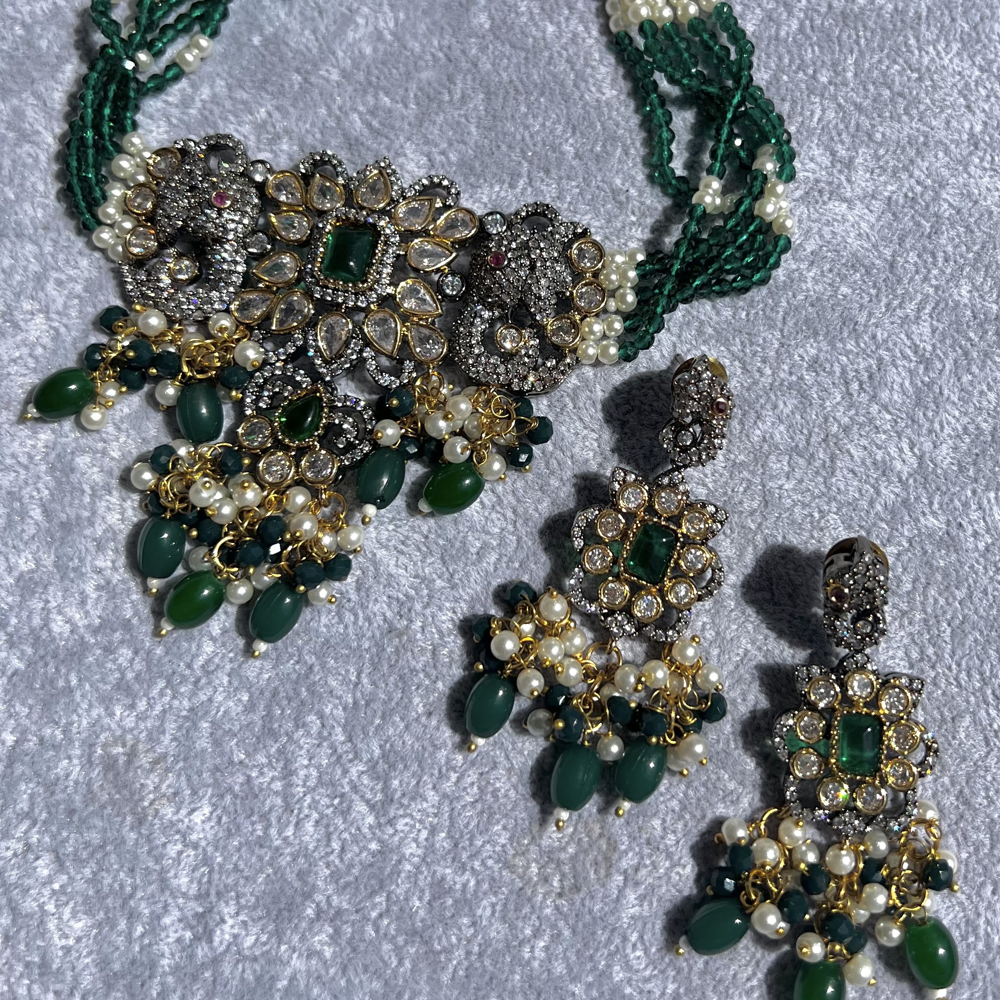
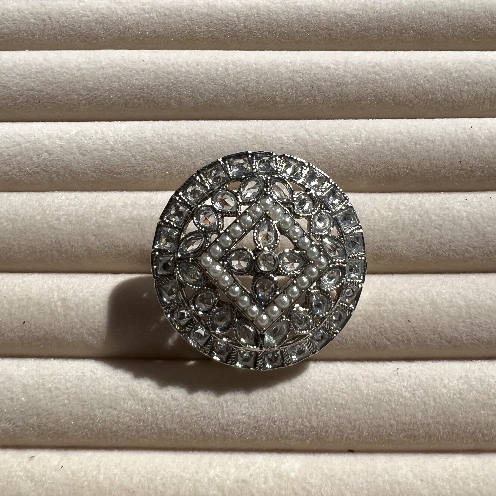
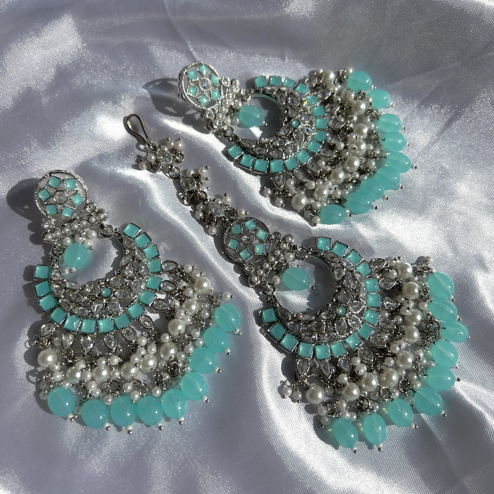

Hi, We are Statement Jewels
Welcome to our website!
In this page, you will find the latest Desi Jewelery and trending accessories!
The Aisha Set
Our Semi Bridal set featuring antique plating, champagne polki crystals, bead detailing, and colorful glass beads featuring a striking and eclectic ensemble with a blend of vintage charm and vibrant, contemporary elements.
The set incorporates colorful glass beads, adding a playful and vibrant element to the design. These beads could come in various shades, perhaps in a mix of pastels or jewel tones, creating a lively contrast against the antique plating and champagne polki crystals.
The earrings in the set would mirror the design elements of the necklace. They might feature dangling elements with champagne polki crystals, bead detailing, and small clusters of colorful glass beads, ensuring a cohesive and coordinated look.
Silver Stoned Ring
A silver ring with reversed and stones, appealing to those who appreciate innovative and artistic jewelry designs.
It combines the timeless elegance of silver with a modern twist, making it a distinctive and memorable piece.
The reversed setting not only adds a touch of unconventional flair but also plays with the way light interacts with the stones. The facets that are typically hidden would now catch and reflect light in unexpected ways, giving the ring an intriguing and eye-catching allure.
The Fatima Set
A silver earring and tikka set adorned with blue beads and reverse and work, gicing a stunning and intricate ensemble,
perfect for special occasions, particularly in cultural and traditional settings.
The inclusion of blue beads introduces a vibrant and captivating color element. The choice of blue suggests a sense of calm and sophistication.The beads may be interspersed throughout the design, creating a pleasing contrast against the silver backdrop.